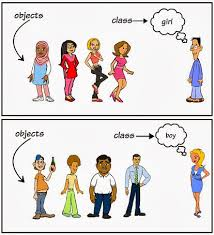

Classes and Objects Classes create objects and objects use methods to communicate between them. They provide a convenient method for packaging a group of logically related data items and functions that work on them. A class essentially serves as a template for an object and behaves like a basic data type “int”. It is therefore important to understand how the fields and methods are defined in a class and how they are used to build a Java program that incorporates the basic OO concepts such as encapsulation, inheritance, and polymorphism. A class is a collection of fields (data) and methods (procedure or function) that operate on that data.
Example
Class student has fields as student number and name. This class also maintains two methods as setData() and display(). The setData() which sets number and name of a student. The display() displays number and name of a student. Write a java program to set and display number, name of one student. Example
(pass value) Class student has fields as student number and name. This class also maintains two methods as setData() and display(). The setData() which sets number and name of a student. The display() displays number and name of a student. Write a java program to set and display number, name of two student. Example
Class Bill has fields as unit price and quantity. This class include methods setBill(), findBill() and displayBill(). The stBill() set unit price and quantity. The findBill() calculates bill amount and display() display it. Write a java programe to set,find and display one bill. Example
Rewrite above program using a constructor instead of method setData.
